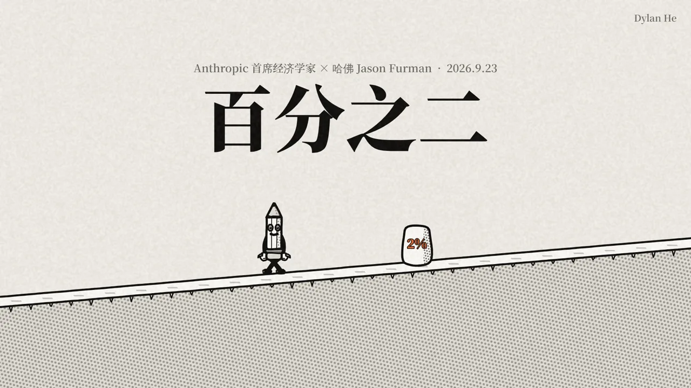
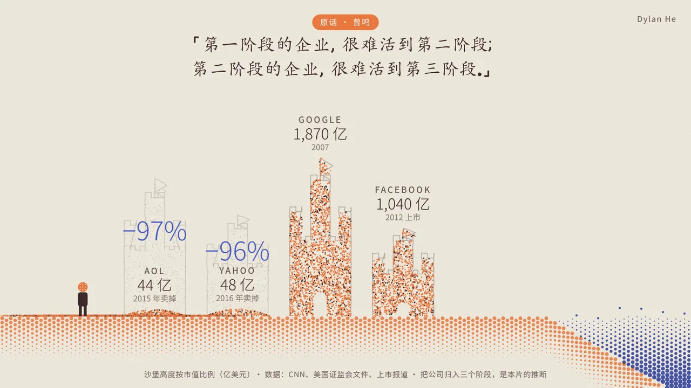
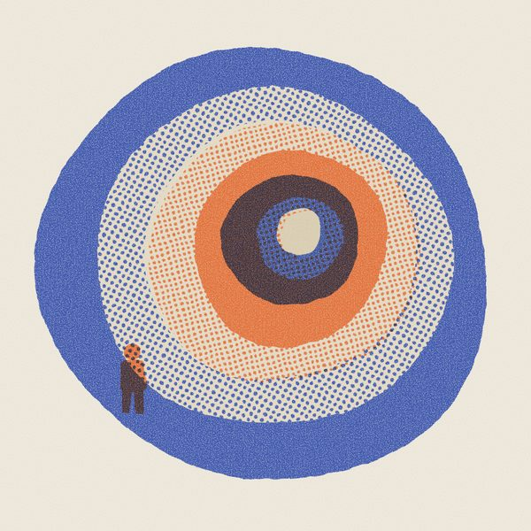

Dylan He
AI Filmmaker & Screenwriter
I hope to tell stories that touch people’s hearts.
SELECTED FILMS
2026 / 5 FILMS
EXPLAINERS
2026 / 2 pieces
Two Percent百分之二 · In ChineseAI keeps leaping ahead, yet growth still runs at about 2%. A pencil walks that road to show where the bottleneck is, and who gets augmented or replaced.
The Wave巨浪 · In ChineseZeng Ming’s view of industry history: why OpenAI and Anthropic are unlikely to be the big winners of the AI-native era.ABOUT DYLAN HE

I hope that one day, someone—a grown-up or a child—will grow quiet in front of a screen, and through one of my stories, reconnect with the tender part of themselves.
Contactdylanhefilms@outlook.com